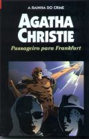

Passageiro para Frankfurt
Passenger to Frankfurt
Aquele parecia ser apenas mais um dia na rotina do vôos internacionais. Mas um encontro inesperado no aeroporto de Frankfurt traz à tona uma trama diabólica que aponta para a possível existência de uma poderosíssima organização internacional, dedicada a semear o caos e criar uma nova ordem maligna sob o comando do “Jovem Siegfried”, anunciado como o filho de ninguém menos que... Adolf Hitler. Crimes, extorsões, contrabando de armas e tráfico de drogas são alguns dos ingredientes deste romance em que Agatha Christie faz a imaginação do leitor voar livremente.